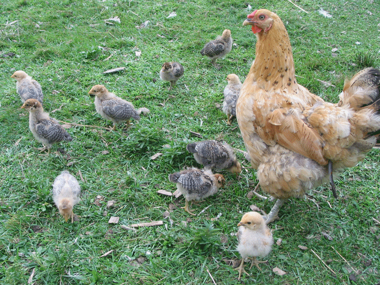
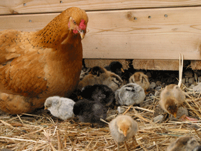

|  | |||||||
| Chicken Moms Spring began with a lesson about the importance of mothers. Ms. Gloria, a new first-time chicken mom, sat on eggs under the ramp to the greenhouse. March 21 the eggs hatched. The next morning at 18° she brought eleven chicks out into the open. WOW! I couldn’t believe it! The books say to raise day-old chicks at 90°! The day warmed to 30°. The chicks spent all day exploring, stopping for rests and warming under mom’s wings! One morning, I heard a lot of agitated chirping and found the four week old chicks in a group and no mom. I looked around and found her fraternizing with Mr. Rooster. She lost interest in her chicks. However, she had taught the chicks to take care of themselves, and they moved as a group to look for food and stay safe from predators. In August, Ms. Gloria sat again, hatching ten chicks, which she mothered until they were older and ready to be on their own. |
 | ||||||
| When the first chicks were 49 days old, I saw a TV program showing factory-farmed meat chickens. The difference between my healthy, slower-growing chickens, and these meat chickens, bred to grow fast and to be processed at 49 days, was incredible. These fast growers put on huge amounts of flesh at the expense of bones and organs. At 49 to 56 days they can’t walk, they are so heavy their bones break! Seeing these chickens and reading more about raising animals made me understand how it has become standard practice to force livestock to grow really fast to make profits. Using drug-forced close birthing, hormones, chemicals, excessive food, processed food, or food they may not normally eat, it is abnormal, and animals get sick or die. It is important for us to raise animals as nature intended. |
|||||||
| Cracked eggs showing the difference in yolk color. The top two eggs were from an commercial organic producer, the bottom orange yolk was from my hens who foraged all over the farm. | |||||||